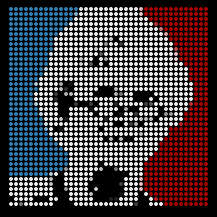
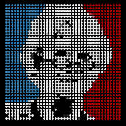
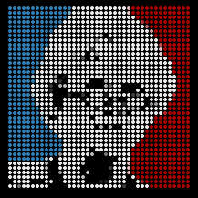

Le président est...
Un exercice de style et de montée en charge
sur App Engine
Didier Girard, Ludovic Champenois, Martin Gorner, Alexis Moussine Pouchkine
 



?
?
?
Didier Girard, Ludovic Champenois, Martin Gorner, Alexis Moussine Pouchkine

fichier: src/com.moi.LePresident/LePresidentServlet.java
package com.moi.LePresident;
import java.io.IOException;
import javax.servlet.http.*;
@SuppressWarnings("serial")
public class LePresidentServlet extends HttpServlet
{
public void doGet(HttpServletRequest req, HttpServletResponse resp)
throws IOException
{
resp.setContentType("text/plain");
resp.getWriter().println("Hello, App Engine");
}
}

fichier: war/index.jsp
<! DOCTYPE html> <%@ page contentType="text/html;charset=UTF-8" language="java" %> <html> <head><title>Le président est ...</title></head> <body> <H1>Le président est ...</H1> <img src="sarkozy.png"> <p><%=request.getProtocol() %></p> </body> </html>
On peut configurer cette page comme page par défaut dans war/WEB-INF/web.xml
Vous trouverez les photos des candidats derrière la première diapositive.
On n'a pas encore le nom de l'élu alors faute de mieux on affiche le protocole en utilisant:
request.getProtocol()
fichier: war/index.jsp
<! DOCTYPE html>
<%@ page contentType="text/html;charset=UTF-8" language="java" %>
<%@ taglib prefix="fn" uri="http://java.sun.com/jsp/jstl/functions" %>
<html>
<body>
<H1>Le président est ...</H1>
<img src="sarkozy.png" />
<% String comment = request.getParameter("user-comment"); %>
<% pageContext.setAttribute("unsafe_string",comment); %>
<p>Vous: ${fn:escapeXml(unsafe_string)}</p>
<form action="" method="post">
<textarea name="user-comment" ></textarea><br/>
<input type="submit" value="c'est mon avis" />
</form>
</body>
</html>
ATTENTION aux vulnérabilités XSS! Ne jamais insérer dans une page du texte en provenance d'un utilisateur sans escaping.
Il vous faut un champ texte:
<form action="" method="post">
<textarea name="user-comment"></textarea>
<input type="submit"
value="c'est mon avis" />
</form>
Et la fonction qui donne la valeur d'un paramètre de requête:
request.getParameter("user-comment")
fichier: war/index.jsp
<! DOCTYPE html>
<%@ page contentType="text/html;charset=UTF-8" language="java" %>
<%@ page import="com.google.appengine.api.users.*" %>
<%@ taglib prefix="fn" uri="http://java.sun.com/jsp/jstl/functions" %>
<html>
<body>
<H1>Le président est ...</H1> <img src="sarkozy.png" />
<%
UserService userService = UserServiceFactory.getUserService();
User user = userService.getCurrentUser();
if (user != null)
{
pageContext.setAttribute("unsafe_string", request.getParameter("user-comment"));
%>
<p><b><%= user.getNickname()%>:</b> ${fn:escapeXml(unsafe_string)}</p>
<form action="" method="post">
<textarea name="user-comment"></textarea><br/>
<input type="submit" value="c'est mon avis" />
<!-- lien de déconnexion -->
<a href="<%= userService.createLogoutURL(request.getRequestURI()) %>">déconnexion</a>
</form>
<% } else { %>
<!-- lien de connexion -->
<p>Bonjour, <a href="<%= userService.createLoginURL(request.getRequestURI()) %>">
identifiez-vous</a> pour pouvoir commenter l'élection.</p>
<% } %>
</body>
</html>

Utiliser le UserService d'App Engine
UserService userService = UserServiceFactory.getUserService(); User user = userService.getCurrentUser(); String n = user.getNickname(); String e = user.getEmail();
Il vous fournit aussi les URLs de connexion et déconnexion:
userService.createLoginURL("myTargetURL")
userService.createLogoutURL("myTargetURL");
fichier: war/index.jsp
Utiliser objectify
 chrome
chrome
Contact:
+Martin Gorner, Outreach manager France
(et les autres ...)
Cette présentation est en ligne:
http://lepresidentest.appspot.com
Plus d'infos:
http://developers.google.com/appengine